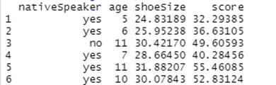
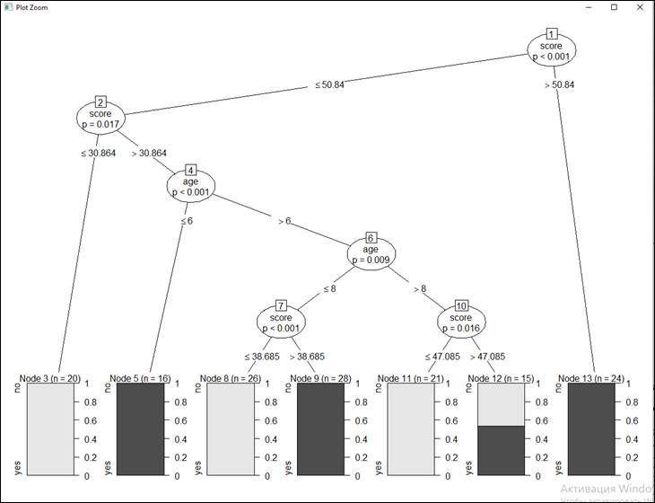

8. Үлкен деректерді өңдеуде Шешім
ағаштарын қолданy
Мақсаты: R программалау тілінде
практикалық тапсырманың көмегімен шешім ағаштарын
құруды үйрену.
Шешім ағаштары - регрессия мен жіктеу тапсырмаларын орындау
мүмкіндігі бар, бақыланатын машиналық оқыту
алгоритмдері. Ол түйіндер мен тармақтармен сипатталады. Мұнда
әрбір атрибут бойынша сынақтар түйіндерде
көрсетіледі.Осы процедураның нәтижесі тармақтарда
және белгілері жапырақ түйіндерінде көрсетіледі.
Сондықтан ол ықтимал нәтижелерін есептеу үшін
қолданылатын әртүрлі шешімдерге негізделген ағаш
тәрізді модельді пайда-ланады. Ағаш негізіндегі
алгоритмдердің бұл түрлері алгоритмдерді түсіндіру
және пайдалану оңай болғандықтан, ең көп
қолданылатын алгоритмдердің бірі болып табылады. Бұдан
басқа осы алгоритм әзірлеген болжамды модельдер жақсы
тұрақтылық пен лайықты дәлдікке ие,
сондықтан олар өте танымал.
Шешім ағаштарының түрлері
Шешім діңгегі: бір ғана бөліктен тұратын шешім
ағашын құру үшін пайдаланылады. Сондықтан бір
деңгейлі шешім ағашы ретінде де белгілі. Ол өзінің
қарапайымдылығына байланысты көп жағдайда төмен
болжамдық өнімділігімен белгілі.
M5: нақты жіктеу дәлдігімен және күшейтілген шешім
ағашында шағын деректер жиынында жақсы жұмыс істеу
қабілетімен танымал.
ID3 (Iterative Dichroatiser 3): Негізгі және кеңінен
қолданылатын шешім ағашының алгоритмдерінің бірі.Берілген
деректер жиыны арқылы жоғарыдан төмен іздеу тәсілін
пайдаланады және берілген деректер жиынын жіктеу үшін ең
жақсы атрибутты таңдайды.
C4.5: Статистикалық жіктеуіш ретінде де белгілі шешім
ағашының бұл түрінің негізі ID3-інен
алынған. Бұл көптеген болжаушылардың негізінде
шешімдерді жасайды.
C5.0: C4.5 мұрагері бола отырып, оның екі үлгісі бар. Атап
айтқанда, негізгі ағаш және ережеге негізделген үлгі. Оның
түйіндері тек категориялық мақсаттарды болжай алады.
CHAID: Хи-квадратты автоматты өзара әрекеттесу детекторы
ретінде кеңейтілген алгоритм болжамдық модельді
құрылымдау арқылы тәуелді айнымалы бойынша
нәтижені негіздеу үшін негізінен біріктіру айнымалыларын зерттейді.
MARS: Көп айнымалы адаптивті регрессия сплайндары ретінде кеңей-тілген
бұл алгоритм айнымалылар арасындағы бұзушылықтар мен
өзара әрекеттесулерді модельдеу үшін пайдаланылатын
сызықтық модельдер серия-сын жасайды. Олар сандық деректерді
жоғары тиімділікпен өңдеу қабілетімен танымал.
Шартты қорытындылар ағаштары: бұл айнымалыларды рекурсивті
бөлу үшін шартты қорытындылар жүйесін пайдаланатын
шешім ағашының түрі. Ол өзінің икемділігімен
және берік негіздерімен танымал.
CART: Жіктеу және регрессия ағаштары ретінде кеңейтілген,
мақсатты айнымалылардың мәндері үздіксіз болса, онда болжанады.
Көріп отырғанымыздай, шешім ағаштарының
көптеген түрлері бар, бірақ олар мақсатты айнымалы
түріне негізделген екі негізгі санатқа жатады, олар:
Категориялық айнымалы шешімдер ағашы: бұл мақсатты
айныма-лылары шектеулі мәнге ие және белгілі бір топқа жататын
шешім ағаштарына қатысты.
Үздіксіз айнымалы шешімдер ағашы: бұл мақсатты
айнымалылары деректер түрлерінің кең ауқымынан
мән қабылдай алатын шешім ағаштарына қатысты.
R-да ағашты таңдау кезінде ескеру қажет болатын
маңызды фактор-ларды қарастырайық.
Энтропия:
Негізінен берілген үлгідегі біртектілікті анықтау үшін
қолданылады. Егер үлгі толығымен біркелкі болса, онда
энтропия 0-ге тең, егер ол біркелкі бөлінген болса - 1. Энтропия
неғұрлым жоғары болса, бұл ақпараттан
қорытынды жасау қиынырақ болады.
Ақпараттық табыс:
Мақсатты жіктеу негізінде оқыту мысалдарының
қаншалықты жақсы бөлінгенін өлшейтін
статистикалық қасиет. Шешім ағашын құрудың
негізгі идеясы - ең аз энтропияны және ең жоғары
ақпараттық кірісті қайтаратын атрибутты табу. Бұл
негізінен жалпы энтропияның төмендеуінің өлшемі
және ол берілген атрибут мәндеріне негізделген деректер
жиынтығы бөлінгеннен кейінгі бөлінгенге дейінгі энтропия мен
орташа энтропия арасындағы жалпы айырмашылықты есептеу арқылы
есептеледі.
Енді осы тұжырымдаманы мысалдың көмегімен
қарастырайық. Бұл жағдайда шешім ағашын
визуализациялау және оның дәлдігін тексеру арқылы
ең көп қолданылатын «readingSkills» деректер жинағы
қолданылады.
Программалық жүзеге асырылуы
Қажетті кітапханаларды импорттап, readSkills деректер жинағын
жүктеу және head(readingSkills) орындау қажет.
library(datasets)
library(caTools)
library(party)
library(dplyr)
library(magrittr)
data("readingSkills")
head(readingSkills)

Сурет 58 - readingSkills нәтижесі
Көріп отырғаныңыздай, мұнда жергілікті спикер, жас,
аяқ өлшемі және ұпай сияқты 4 баған бар.
Осылайша, біз негізінен адамның ана тілінде сөйлейтінін немесе
басқа критерийлерді пайдаланбайтындығын анықтаймыз және
сол арқылы жасалған шешім ағашының үлгісінің
дәлдігін көреміз.
sample_data = sample.split(readingSkills, SplitRatio = 0.8)
train_data <- subset(readingSkills, sample_data == TRUE)
test_data <- subset(readingSkills, sample_data == FALSE)

Сурет 59 - Шешім ағашының нәтижесі
Деректерді оқу және тестілеу жиындарына бөлу деректерді
іздеу үл-гілерін бағалаудың маңызды бөлігі болып
табылады. Сондықтан ол оқу және сынақ
жиынтықтарына бөлінеді. Жаттығу жиынын пайдалану арқылы
үлгі өңделгеннен кейін, сынақ жиынына қарсы
болжамдар жасау арқылы үлгіні тексеруге болады. Сынақ
жиынындағы деректер болжағыңыз келетін төлси-паттың
белгілі мәндерін қамтитындықтан, үлгі
болжамдарының дұрыстығын анықтау оңай.
Осылайша, шешім ағаштары өте пайдалы алгоритмдер болып
табылады, өйткені олар күтілетін мәндерге негізделген
баламаларды таңдау үшін ғана емес, сонымен қатар
басымдықтарды жіктеу және болжамдар жасау үшін
қолданылады. Мұндай модельдерді сәйкес қолданбаларда
пайдаланудың дәлдігін анықтау бізге байланысты.
Тапсырмалар:
1. Сіз жаңа кеңес
беру қызметін құру перспективаларын қарастырасыз.
Бастапқы кезеңде қажетті инвестициялар көлемі $200
мың, сұраныстың 1-ші жылы жоғары болуы 60%
ықтималдығы бар. Егер сұраныс бірінші жылы жоғары
болса, келесі жылдары жоғары және төмен
сұраныстың ықтималдығы сәйкесінше 80% және
20% құрайды. Егер сұраныс 1-ші жылы төмен болса, келесі
жылдары жоғары және төмен сұраныстың
ықтималдығы сәйкесінше 40% және 60%
құрайды. Жоғары сұраныс кезінде болжамды кіріс 500
мың долларды құрайды; төмен сұраныс кезінде
болжамды кірістер 300 мың долларға тең. Осы
нұсқаларды суреттейтін және 3 жылға созылатын
"шешімдер ағашын" жасаңыз.
2. Фермер жүгері немесе қарақұмық өсіре
алады. Бұл дақылдардың болашақ өнімі
бағасының өсу, сол деңгейде қалу немесе
төмендеу ықтималдығы сәйкесінше 0,25, 0,30 және
0,45 құрайды. Егер баға көтерілсе, жүгері
түсімі 30 000 доллар береді, ал қарақұмық
дақылдары - $ 10,000. Егер бағалар өзгеріссіз қалса,
фермер шығындарды жабады. Бірақ егер бағалар төмендесе,
жүгері мен қарақұмық дақылдарының
өнімділігі $ 35,000 және $ 5,000 жоғалтуға
әкеледі. Шешім ағашын жасаңыз. Оның пайдасының
күтілетін нәтижесінің мәні қандай?
Бақылау сұрақтары:
1. Шешім ағаштары дегеніміз не және үлкен көлемді
деректерде пайдаланудың қандай орны бар?
2. Шешім ағаштарын R
программасында құру алгоритмін атаңыз
3. Шешім ағаштарын R
программасында құру үшін қандай функциялар
қолданылады?